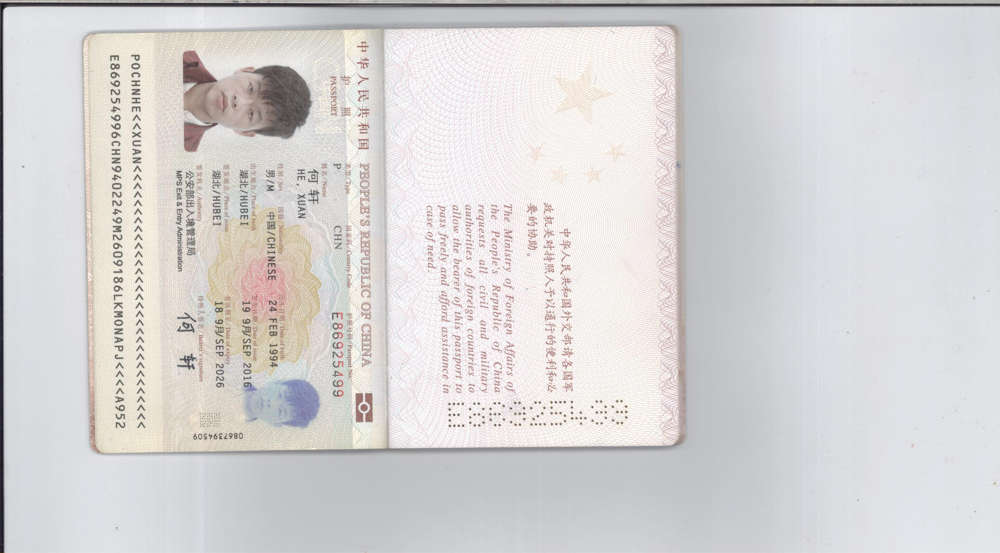

深圳市西林电气技术有限公司成立于2006年，长期专注于电力电子与工业自动化控制产品的研发、生产和销售，是深圳市认定的的高新技术企业和软件企业，公司汇聚了一批国内优秀的行业技术专家和营销管理人才，在国内低压变频器领域处于技术领先地位，可快速地为机械设备制造商提供个性化的行业应用解决方案，为客户创造更大的价值。公司位于深圳市宝安区航城大道华丰工业园，距离深圳宝安机场只有8分钟路程，毗邻深圳地铁1号线，地理...
GOOGLE 西林电气喜获2013电气行业最具创新企业10-28 西林电气举行2013年度篮球比赛01-11 西林电气获邀参加“节能低碳，保护地球企业家论坛”06-04 热烈庆祝深圳市西林电气哈尔滨、福州办事处正式成立02-29 西林电气荣获“2011中国电气行业变频器杰出企业”01-12 西林电气400服务热线升级通告01-10 西林电气EH800A系列矢量型隆重上市
西林变频器在油田注水泵上的应用04-16 西林变频器在染整行业的应用04-03 西林变频器在造纸行业的同步控制应用03-21 西林EH600A在油田磕头机上的应用03-21 西林EH600A在食品机械上的应用03-21 西林EH600A在数控车床上的应用
| 1. | jackson.gmail.com |
| 2. | james.gmail.com |